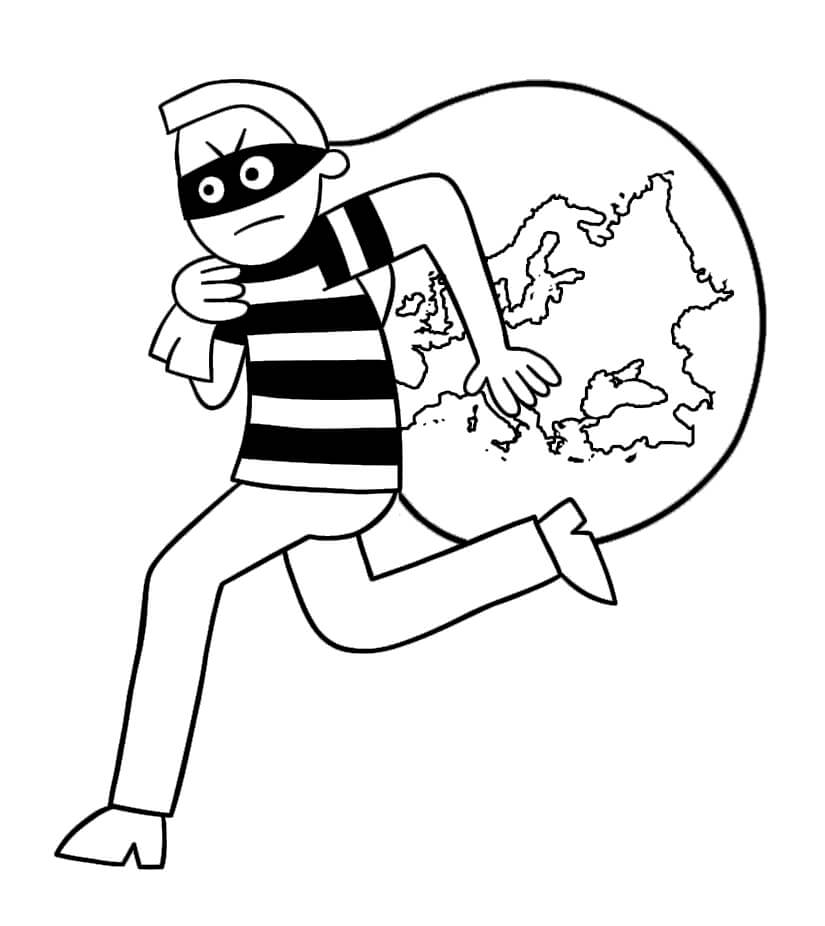
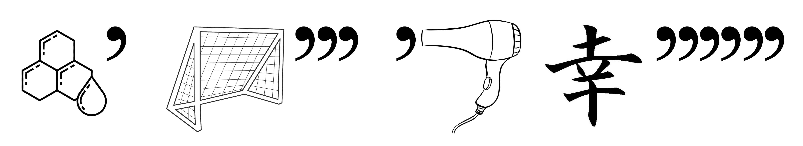

КВЕСТ ПО ВЫСТАВКЕ «ШАГАЛ. LA BIBLE»
Несколько рекомендаций по прохождению квеста!
- Не бросайтесь проходить квест сразу — для начала хотя бы минимально ознакомьтесь с экспозицией.
- Отвечать на задания можно в любом удобном для вас порядке.
- Если совсем не удаётся решить какое-то задание, то смело переходите к следующему. Пока будете решать следующее задание, можете натолкнуться на ответ к предыдущему 😉
- Чтобы пройти квест, обращайте внимание на работы всех авторов.
- Если вы правильно ответите на все вопросы квеста, то получите приятный бонус от FARBA.

1.
Начинаем! Вам сразу повезло, ведь вам предстоит найти ответ на вопрос от генерального партнёра выставочного проекта «Шагал. La Bible» — компании OZ 🔥
На изображении ниже мы зашифровали название работы из экспозиции, хотя работа с таким названием есть и у В. Серова.
Мы в вас верим, поэтому, когда найдете работу с таким названием, то напишите, пожалуйста, КАКОЙ ПЕРНАТЫЙ фигурирует в описании работы слева?
К сожалению, это неправильный ответ. Попробуйте еще раз! Помните, что можно воспользоваться видеоподсказками или нажать на кнопку «Узнать ответ».
На зашифрованном изображении вы видите, как какой-то джентльмен похищает нечто в мешке. Это нечто в мешке напоминает очертания какой-то части света. Хм, кажется, это Европа, значит зашифрованное название работы — «Похищение Европы». Когда нашли работу с таким названием, то внимательно читайте описание работы слева. Автор работы слева — Светлана ВОРОБЕЙ. Вот и нужный вам пернатый!
Правильный ответ: воробей.
Подсказка
2.
Как у вас обстоят дела с ребусами? Подсказываем, если не знаете: сколько запятых или апострофов — столько букв надо убрать в начале или в конце слова, которое изображено. В ребусе мы загадали вам название одной работы на выставке.
Разгадали ребус? У вас должно было получиться название нескольких работ из экспозиции. Найдите самую позднюю работу с таким названием и напишите, пожалуйста, ИМЯ АВТОРА этой работы.
К сожалению, это неправильный ответ. Попробуйте еще раз! Помните, что можно воспользоваться видеоподсказками или нажать на кнопку «Узнать ответ».
Давайте расшифруем ребус. Первая картинка — соты. Запятая после — убираем одну букву в конце, остаётся «СОТ». Дальше, «ворота». Убираем 3 (три!) последние буквы, получаем «ВОР». На третьей картинке — фен, а когда уберем у него первую букву, то останется «ЕН». И, наконец, на последней картинке вы видите «иероглиф», а когда уберете целых 6 букв с конца, то получите всего лишь «ИЕ». Складываем всё вместе: СОТ + ВОР + ЕН + ИЕ = СОТВОРЕНИЕ. Самую позднюю работу с таким названием стоит искать среди беларусских авторов. Там и найдёте работы ПОЛИНЫ Корзун-Фомченко. Имя автора — ПОЛИНА.
Правильный ответ: Полина.
Подсказка
3.
ОН находится примерно в 2,35 км ходьбы от вас. Примерно 100 лет назад в НЁМ функционировал сначала спортивный зал для пожарной команды, а затем архив. Как вы догадываетесь, он также является названием одной из работ в экспозиции. Уже, наверное, знаете, о чем речь? Тогда напишите, пожалуйста, КАКОЙ ПЕЧАЛЬНЫЙ ОБЪЕКТ расположился на работе по соседству.
К сожалению, это неправильный ответ. Попробуйте еще раз! Помните, что можно воспользоваться видеоподсказками или нажать на кнопку «Узнать ответ».
Раз расстояние до него всего лишь 2,35 км, то это, вероятно, какой-то минский объект или достопримечательность. А учитывая, что примерно 100 лет назад в нём располагался спортивный зал, а после архив, то это очень напоминает судьбу храмов в советское время. Осталось прогулятся по экспозиции и найти среди названий работ минский храм. А вот и он — «Собор Святого духа» Виктории Богуш. А по соседству — её же картина «ОСТРОВ СЛЁЗ». Это и есть нужный вам печальный объект.
Правильный ответ: Остров слёз.
Подсказка
4.
Стоимость этой работы не менее 560 советских рублей, если пытаться рассуждать логически. На этой работе можно найти нашего знаменитого земляка, который родился ещё в конце XIX века. Техника создания этой работы тоже достаточно необычная, но нас интересует другое — КАКУЮ ЕВРОПЕЙСКУЮ СТОЛИЦУ можно увидеть в описании к этой работе?
К сожалению, это неправильный ответ. Попробуйте еще раз! Помните, что можно воспользоваться видеоподсказками или нажать на кнопку «Узнать ответ».
Отталкиваться от знаменитых земляков, которые родились в конце XIX века, мы вам не рекомендуем, ведь таких — безліч, кажучы па-беларуску. Значит давайте исходить из другой полезной информации в вопросе — 560 советских рублей. Это же 5.600 советских копеек. Хм, где-то мы эту цифру встречали, да и советские моенты тоже. Это же всё о работе Вадиса Красовского из советских монет. На работе изображен, собственно, Марк Шагал, а в описании к этой работе фигурирует столица Франции — ПАРИЖ.
Правильный ответ: Париж.
Подсказка
5.
Жизнь Марка Шагала была богата на различные события, а прожил он целых 97 лет. Соотнесите, пожалуйста, даты с событиями из его жизни. Удачи!
| 1 | 1914 | А | В июне по приглашению Министерства культуры СССР совершает поездку в Москву и Ленинград. Выставка в Третьяковской галерее. |
| 2 | 1931 | Б | По инициативе министра культуры Франции Андре Мальро Шагал начинает выполнять роспись плафона в парижской Гранд-Опера. |
| 3 | 1941 | В | Смерть первой жены Беллы Шагал. |
| 4 | 1944 | Г | Получает приглашение от Музея современного искусства в Нью-Йорке переселиться в США. В июне прибывает с семьей в Нью-Йорк. |
| 5 | 1963 | Д | Перед тем, как начать иллюстрирование Библии по заказу Амбруаза Воллара, посещает Палестину, Сирию, Египет для того, чтобы «прикоснуться сердцем» к тем местам, которые стоят за древним текстом Библии. |
| 6 | 1973 | Е | Первая крупная персональная выставка в галерее Херварта Вальдена «Дер Штурм» в Берлине. |
К сожалению, это неправильный ответ. Попробуйте еще раз! Помните, что можно воспользоваться видеоподсказками или нажать на кнопку «Узнать ответ».
Читайте информационные стенды, на них всё есть.
Правильный ответ: 1Е2Д3Г4В5Б6А.
Подсказка
6.
Если исходить из названия этой техники, то создается твердое убеждение, что эта техника подразумевает работу с определённым видом ткани, но в наши дни это совсем не так. Догадались, о какой технике речь? Тогда найдите в экспозиции работы, выполненные в этой технике, и напишите прекрасную ФАМИЛИЮ их АВТОРА.
К сожалению, это неправильный ответ. Попробуйте еще раз! Помните, что можно воспользоваться видеоподсказками или нажать на кнопку «Узнать ответ».
Надо немного вашего упорства. Пройдитесь по экспозиции и читайте внимательно названия техник, в которых выполнены работы. Когда увидите нужную, то сразу соотнесёте ее с видом ткани. Речь идёт о «шелкографии» и «шёлке». Шелкография, она же «трафаретная печать», используется скорее даже для печати не на шёлке. А автор шелкографий на выставке — Михаил ГРОБМАН, человек с прекрасной фамилией.
Правильный ответ: Гробман.
Подсказка
7.
Как вы знаете Марк Шагал был достаточно разносторонним мастером. Ниже вы можете видеть те техники, в которых он работал. Соотнесите, пожалуйста, название техники с ее описанием... и будет вам счастье!
| 1 | ОФОРТ | А | Вид монументального искусства, произведение изобразительного декоративного искусства или орнаментального характера из цветного стекла, рассчитанное на сквозное освещение и предназначенное для заполнения проёма, чаще всего оконного, в каком-либо архитектурном сооружении. |
| 2 | ЛИТО- ГРАФИЯ |
Б | Вид гравюры на дереве. Чтобы создать такую гравюру, рисунок вырезают на деревянной доске, покрывают краской и печатают на бумаге или сходном материале. |
| 3 | ВИТРАЖ | В | Способ печати, при котором краска под давлением переносится с плоской печатной формы на бумагу. В основе лежит физико-химический принцип, подразумевающий получение оттиска с совершенно гладкой поверхности (камня), которая, благодаря соответствующей обработке, приобретает свойство на отдельных своих участках принимать специальную литографскую краску. |
| 4 | СУХАЯ ИГЛА |
Г | Разновидность гравюры на металле, в которой химический процесс
травления заменяет механический способ обработки поверхности различными гравировальными
инструментами. Эту технику относят к углубленной (глубокой) печати, то есть печати, при которой углубления рисунка заполняются краской, и затем под сильным давлением пресса изображение переходит на бумагу. |
| 5 | КСИЛО- ГРАФИЯ |
Д | Техника гравирования на металле, не использующая травление, а основанная на процарапывании остриём твёрдой иглы штрихов на поверхности металлической доски. Полученная доска с изображением представляет собой форму глубокой печати. |
К сожалению, это неправильный ответ. Попробуйте еще раз! Помните, что можно воспользоваться видеоподсказками или нажать на кнопку «Узнать ответ».
Читайте информационные стенды, подключайте логику, гуглите.
Правильный ответ: 1Г2В3А4Д5Б.
Подсказка